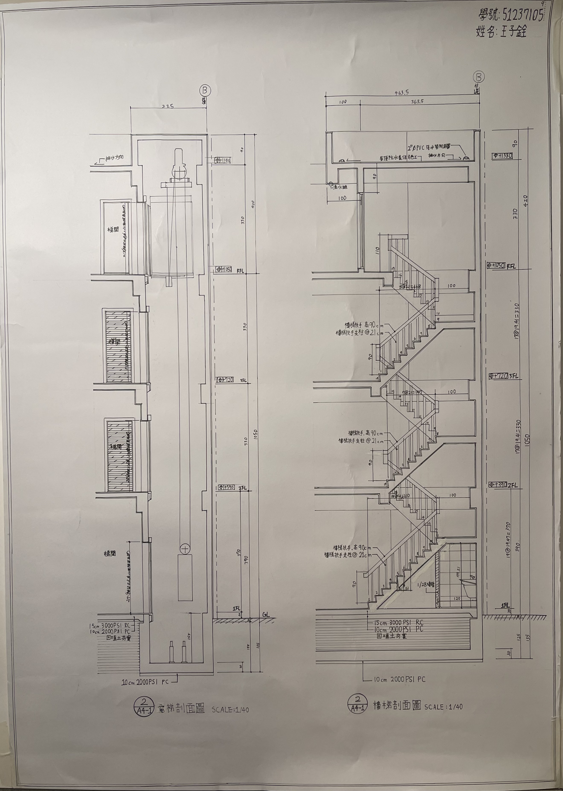
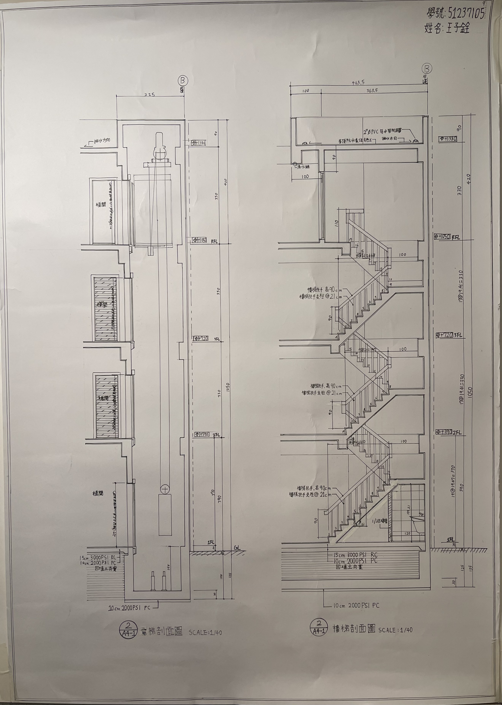

Explaining the boundaries between physical space and digital intelligence through architectural design.
透過建築設計，探索實體空間與數位智能的邊界。


我是王子銓，在建築、音樂與科技之間尋找平衡。我不斷探索數位工具與 AI 如何優化建築工作流。這份網站不僅是我的作品集，也是我自主學習網頁架設的實踐成果，擅長運用數位工具 (AutoCAD, SketchUp, Illustrator)。
✨ 此網站為 AI 學習與協作之作品


 
